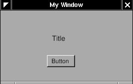
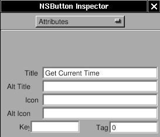
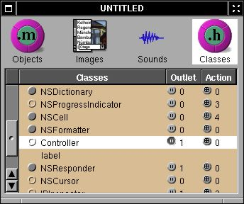
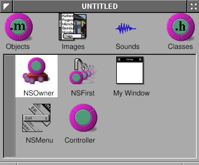
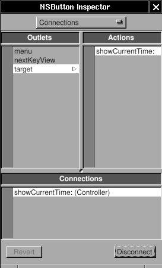
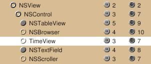
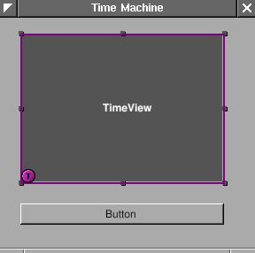
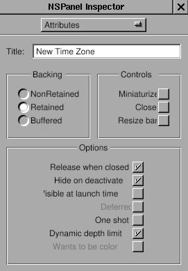
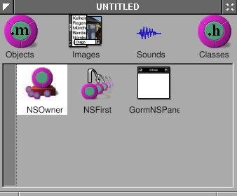
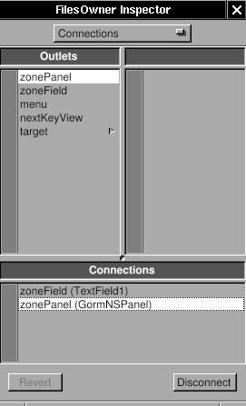

TimeMachine¶
Single Window Application¶
Single window application is one of the most commonly used application type. Here, a TimeMachine application is made to demonstrate several techniques of GNUstep programming.
Outlet and Action¶
I’ll write an application which show the current time with a button to update. It looks like this:
Figure 4-1. Simple TimeMachine

This application is very easy. Just to show how to use “outlet” and “action” in Gorm, and the relation between “controller” and “view”.
Open Gorm, choose “Document→New Application”, and build a window with a title and a button.
Figure 4-2. Interface of simple TimeMachine

You can set the title of the button in the inspector. So does the title of window.
Figure 4-3. Change title of button


That’s all I need to do on the interface.
Now, I need an “controller” to receive the action from the “view”, and display the time on the “view”. I need to create a object for this “controller”.
First, I need to design the class of this “controller”. Click the “classes” in the main window of Gorm.
Figure 4-4. Classes in Gorm

It will show all the classes you can use. I want the class of this “controller” to inherit from NSObject. Therefore, choose “NSObject”, then select the menu “Classes→Create Subclass…”. It will create a new class under the NSObject.
Figure 4-5. Create subclass of NSObject

Double-click on it to change the name. I call it “Controller” here. That’s the name of this class.
Figure 4-6. Change class name

Then I need a “outlet” in this class to connect to the label in the window, and an “action” which is triggered when the button is press.
Choose the “Controller” class and click “Outlets” tab in the inspector. Press “Add” button, and change the name to “label” by double-clicking the “newOutlet”. You will notice that “Controller” class now has one outlet. Click on the small round button will list the outlets it has.
Figure 4-7. Add outlet


Now, click “Actions” tab and add a new action called “showCurrentTime:”. You should notice that the action is ended with colon (:), which will be explained later.
Figure 4-8. Add action

Once I finish designing this class, I can create an instance from it.
Choose the class “Controller”, then select the menu “Classes→Instantiate”. Look at the objects of Gorm main window. You should find a new instance, called “Controller”. That’s the instance I want to connect to the interface.
Figure 4-9. NSOwner

Now, I can connect the “controller” to the “view” for the outlet. Hold on “Ctrl”, select the “Controller” instance, drag to the label in the window. Look at the inspector, which will show all the outlet the “Controller” instance has. Select the only one “label”, click the “connect” button. That’s it.
Figure 4-10. Connect outlet


Again, I can connect the “view” to the “controller” for the action. Hold on “Ctrl”, select the button in the window, drag to the “Controller” instance. Look at the inspector, which will show all the outlet the button has. Select the “target” in the outlet column, then select the only one action the target has, “showCurrentTime”. Click the “connect” button. That’s it.
Figure 4-11. Connect action



Finally, I need to create the files for this “Controller” class in order to add the the source code. Otherwise, this class has not function at all. Select the class “Controller” ( not the instance !) in the Gorm main window. Choose menu “Classes→Create Class Files”. A “Save” panel will show up and ask the filename. The default is “Controller.m”, which is good enough. Click “O.K.”. Save this Gorm file as “TimeMachine.gorm”, then leave Gorm.
Now, I have a directory, “TimeMachine.gorm”, and two file, “Controller.h” and “Controller.m”.
Controller.h:
/* All Rights reserved */
#import <AppKit/AppKit.h>
@interface Controller : NSObject
{
id label;
}
- (void) showCurrentTime: (id)sender;
@end
Controller.m:
/* All Rights reserved */
#import <AppKit/AppKit.h>
#import "Controller.h"
@implementation Controller
- (void) showCurrentTime: (id)sender
{
/* insert your code here */
}
That’s the source code of the class “Controller” I just created in Gorm. The method -showCurrentTime: has the message “sender”. That’s the reason the action name in Gorm must has the colon (:) in the end. In the “Controller.h”, you can find the outlet “label” and the action “showCurrentTime:”. Therefore, whatever you do on the outlet “label” will reflect to the “label” in the interface, and when the button “Get Current Time” is pressed, the action -showCurrentTime: will be called. That’s how the outlet and action work.
Now, I can put some source code in this class.
Controller.m:
/* All Rights reserved */
#import <AppKit/AppKit.h>
#import "Controller.h"
@implementation Controller
- (void) showCurrentTime: (id)sender
{
/* insert your code here */
NSCalendarDate *date = [NSCalendarDate date];
[date setCalendarFormat: @"%H : %M : %S"];
[label setStringValue: [date description]];
}
First, [NSCalendarDate date] will create an instance with the current date and time. After setting the format, put the description of current time into the outlet “label”. When users click the “Get Current Time” button, it will show the current time.
That’s it. Add the main.m and GNUmakefile, then it is ready to go.
main.m:
#import <AppKit/AppKit.h>
int main(int argc, const char *argv[])
{
return NSApplicationMain (argc, argv);
}
GNUmakefile:
include $(GNUSTEP_MAKEFILES)/common.make
APP_NAME = TimeMachine
TimeMachine_HEADERS = Controller.h
TimeMachine_OBJC_FILES = main.m Controller.m
TimeMachine_RESOURCE_FILES = TimeMachineInfo.plist TimeMachine.gorm
TimeMachine_MAIN_MODEL_FILE = TimeMachine.gorm
include $(GNUSTEP_MAKEFILES)/application.make
In this example, the owner of the interface is NSApp, which is the NSOwner in Gorm, but the controller is the “Controller” instance. Sometimes, the owner and the controller could be the same. In simple application, the owner/controller of the window can also be the delegate of NSApp. That’s all depending on the design of your application.
Custom View¶
Gorm can work on the custom view, which is designed by the programmer, not the built-in GUI component. Here, I continue my “time machine” application to demonstrate how to do that. The new interface looks like this:
Figure 4-12. TimeMachine with custom view

Since I want to use the custom view in Gorm, I have to design the class first. The custom view can inherit from NSView, or NSControl, depending on what kind of functions you want. Actually, NSControl is a subclass of NSView. So I will inherit from NSControl. Click on the small circle of NSResponder to open its subclasses, then do the same thing on NSView and NSControl. Now, you can see that many GUI component inherit from NSControl, ex. NSTextField.
Figure 4-13. NSControl in Gorm

I want my custom view, called “TimeView”, inherit from NSControl. Choose “NSControl”, then select menu “Classes→Create Subclass…”. Double-click to change the name.
Figure 4-14. Add subclass of NSControl

You can notice that class “TimeView” also inherits 3 outlets and 7 actions from NSControl. Once the class “TimeView” is created, I can use it as custom view.
Build the interface as below:
Figure 4-15. Interface with custom view

Look at the “Attributes” in inspector of CustomView. Choose the class “TimeView”.
Figure 4-16. Change class of custom view

The “CustomView” becomes “TimeView”. That’s it !
Figure 4-17. Custom view with TimeView class

As I did before, create another class for the “controller”. Add one outlet for this “TimeView”, and one action for the button. I name the outlet “timeView”.
Figure 4-18. Add outlet

Figure 4-19. Add action

Create an instance of class “Controller”. Connect the button to the action “showCurrentTime”, and the outlet “timeView” to the custom view “TimeView”.
Figure 4-20. Connect outlet



Finally, create the class file for the classes “TimeView” and “Controller”. Save this application as “TimeMachine.gorm”.
Now, I need to design the interface for the class “TimeView”. The class “TimeView” is actually four NSTextField in a NSBox. The reason that I made them in one class is because I can reuse it later on. Classes inherited from NSView will be initialized by calling method -initWithFrame:. Therefore, I only need to rewrite the method -initWithFrame: in the class “TimeView”. Here are the files:
TimeView.h:
#import <AppKit/AppKit.h>
@interface TimeView : NSControl
{
NSTextField *labelDate, *labelTime;
NSTextField *localDate, *localTime;
NSCalendarDate *date;
}
- (NSCalendarDate *) date;
- (void) setDate: (NSCalendarDate *) date;
@end
TimeView.m:
#import <AppKit/AppKit.h>
#import "TimeView.h"
@implementation TimeView
- (id) initWithFrame: (NSRect) frame
{
NSBox *box;
self = [super initWithFrame: frame];
box = [[NSBox alloc] initWithFrame: NSMakeRect(0, 0,
frame.size.width,
frame.size.height)];
[box setBorderType: NSGrooveBorder];
[box setTitlePosition: NSAtTop];
[box setTitle: @"Local Time"];
labelDate = [[NSTextField alloc] initWithFrame: NSMakeRect(10, 45, 35, 20)];
[labelDate setStringValue: @"Date: "];
[labelDate setBezeled: NO];
[labelDate setBackgroundColor: [NSColor windowBackgroundColor]];
[labelDate setEditable: NO];
labelTime = [[NSTextField alloc] initWithFrame: NSMakeRect(10, 15, 35, 20)];
[labelTime setStringValue: @"Time: "];
[labelTime setBezeled: NO];
[labelTime setBackgroundColor: [NSColor windowBackgroundColor]];
[labelTime setEditable: NO];
localDate = [[NSTextField alloc] initWithFrame: NSMakeRect(55, 45, 130, 20)];
localTime = [[NSTextField alloc] initWithFrame: NSMakeRect(55, 15, 130, 20)];
[box addSubview: labelDate];
[box addSubview: labelTime];
[box addSubview: localDate];
[box addSubview: localTime];
RELEASE(labelDate);
RELEASE(labelTime);
RELEASE(localDate);
RELEASE(localTime);
[self addSubview: box];
RELEASE(box);
return self;
}
- (NSCalendarDate *) date
{
return date;
}
- (void) setDate: (NSCalendarDate *) aDate
{
ASSIGN(date, aDate);
[date setCalendarFormat: @"%a, %b %e, %Y"];
[localDate setStringValue: [date description]];
[date setCalendarFormat: @"%H : %M : %S"];
[localTime setStringValue: [date description]];
}
- (void) dealloc
{
RELEASE(date);
[super dealloc];
}
@end
When Gorm generates the class files, it contains some default codes in it. Since I don’t need any of them, they are safe to be removed. In TimeView.h, I declare four NSTextField for display, and on NSCalendarDate to store the date. I also declare two accessory methods to set and get the date. In the -initWithFrame, one NSBox is set up, and four NSTextField is put into it. And class “TimeView” is a subclass of NSView, I add the NSBox as the subview of the class “TimeView”.
Other parts of this application should be very easy. Here are the files:
Controller.h:
#import <AppKit/AppKit.h>
#import "TimeView.h"
@interface Controller : NSObject
{
id timeView;
}
- (void) showCurrentTime: (id)sender;
@end
Controller.m:
#import <AppKit/AppKit.h>
#import "Controller.h"
@implementation Controller
- (void) showCurrentTime: (id)sender
{
/* insert your code here */
NSCalendarDate *date = [NSCalendarDate date];
[timeView setDate: date];
}
@end
main.m:
#import <AppKit/AppKit.h>
int main(int argc, const char *argv[])
{
return NSApplicationMain (argc, argv);
}
GNUmakefile:
include $(GNUSTEP_MAKEFILES)/common.make
APP_NAME = TimeMachine
TimeMachine_HEADERS = Controller.h TimeView.h
TimeMachine_OBJC_FILES = main.m Controller.m TimeView.m
TimeMachine_RESOURCE_FILES = TimeMachineInfo.plist TimeMachine.gorm
TimeMachine_MAIN_MODEL_FILE = TimeMachine.gorm
include $(GNUSTEP_MAKEFILES)/application.make
You should notice that I didn’t instantiate the class “TimeView” in class “Controller” because when I add an custom view to the window, it is instantiated automatically. I only need to specify the class the custom view should be. On the contrary, I have to instantiate the class “Controller” in Gorm because it is not a GUI component. Without instantiation, I can’t connect the “controller” to the “view”.
Drawing¶
I want a graphic clock, which looks like this:
Figure 4-21. Custom view with analog clock

It is very simple. I only need to add a new GUI component in the class TimeView. I call this new class “ClockView”. Since “ClockView” will be the subview of “TimeView”, when “TimeView” is update, I also need to update the “ClockView”.
ClockView.h:
#import <AppKit/AppKit.h>
#include <math.h>
@interface ClockView : NSView
{
NSPoint posHour, posMinute;
}
- (void) setDate: (NSCalendarDate *) aDate;
@end
ClockView.m:
#import "ClockView.h"
@implementation ClockView
- (id) init
{
self = [super init];
posHour = NSMakePoint(0,0);
posMinute = NSMakePoint(0,0);
return self;
}
- (void) drawRect: (NSRect) frame
{
NSPoint origin = NSMakePoint(frame.size.width/2, frame.size.height/2);
NSBezierPath *bp = [NSBezierPath bezierPathWithRect: [self bounds]];
[[NSColor yellowColor] set];
[BP fill];
BP = [NSBezierPath bezierPathWithRect: NSMakeRect(1, 1,
frame.size.width-2,
frame.size.height-2)];
[[NSColor blackColor] set];
[BP stroke];
BP = [NSBezierPath bezierPath];
[BP setLineWidth: 3];
[BP moveToPoint: origin];
[BP relativeLineToPoint: posHour];
[BP stroke];
[BP setLineWidth: 1];
[BP moveToPoint: origin];
[BP relativeLineToPoint: posMinute];
[BP stroke];
}
- (void) setDate: (NSCalendarDate *) date;
{
int hour = [date hourOfDay];
int minute = [date minuteOfHour];
float hour_x = 40*sin((M_PI*hour/6)+(M_PI*minute/360));
float hour_y = 40*cos((M_PI*hour/6)+(M_PI*minute/360));
float minute_x = 60*sin(M_PI*minute/30);
float minute_y = 60*COs(M_PI*minute/30);
posHour = NSMakePoint(hour_x, hour_y);
posMinute = NSMakePoint(minute_x, minute_y);
[self setNeedsDisplay: YES];
}
@end
ClockView inherits from NSView. The most important method it should override is -drawRect:. When this view need to update, -drawRect: will be called. Therefore, I put all the drawing in this method. NSBezierPath is how GNUstep draws. I assign the path, set the color, then draw. There are good article about drawing: Introduction to Cocoa Graphics, Part I, Part II.
A few codes are needed to include ClockView in TimeView. One is to add ClockView as a subview of NSBox in TimeView. Another is to update ClockView when TimeView is update. In method -setDate: of ClockView, it uses [self setNeedsDisplay: YES] to make this view update. This modification is easy to do. You can play around it.
Panel¶
Panel is a special kind of window. Read the Cocoa document for more details: Windows and Panels. Since I have a clock already, I want to know the time in different time zones. My idea is that when I click the title of the NSBox, a panel will show up and ask the time zone. Once the time zone is inputted, it will display the time in that area. Since NSPanel is a subclass of NSWindow, the usage of NSPanel is similar to the NSWindow. Again, I need a “controller” to control the “view”, which is NSPanel in this case. “View” is generated by Gorm, and I need to write the “controller” by myself. In this example, I’ll show how to load the gorm file. There are many built-in panel in GNUstep. I also use one in this example.
Firstly, I need to build the interface for the panel. Open Gorm, Choose menu “Document → New Module → New Empty”. Look at the palettes. There is one for panel.
Figure 4-22. Panel in Gorm

Drag the panel out of palettes. Build the interface as below.
Figure 4-23. Interface of time zone panel

You can change the size of panel in the inspector. Here is the attributes of this panel I use.
Figure 4-24. Panel attributes

Now, I got the “view”. Then where is the “controller” ? Generally, I can write a new class as the controller of this view, but this is a small program. It is not necessary to write a new class only as the controller. So I decide to use the class “TimeView” as the controller for this panel. So class “TimeView” acts as the custom view for that main window interface, and the controller for the panel. Since “TimeView” is the controller of this panel, I need to connect the outlets and actions. Therefore, I need to create the class “TimeView” again in this gorm file, even though there is already one in TimeMachine.gorm file.
You already know how to create the class “TimeView”. I add two outlets, “zonePanel” and “zoneField”, and two actions, “okAction:” and “cancelAction:”.
Figure 4-25. Outlets for time zone panel

Figure 4-26. Actions for time zone panel

But rather than creating an instance to connect the panel, I’ll set the owner of this panel as the class “TimeView”. The advantage is that I can reduce the number of instances to use.
Select the NSOwner in Gorm main window, then select class “TimeView” in “attributes” of inspector.
Figure 4-27. Set NSOwner to TimeView class


By this way, I can connect the panel to the NSOwner, which is an instance of class “TimeView”. Connect the two buttons to the actions in NSOwner, the outlet “zoneField” to the NSTextField in panel, and the outlet “zonePanel” to the panel. Pay attention to how the NSOwner connects to the panel.
Figure 4-28. Connect outlet


Save this interface as “TimeZonePanel.gorm” file, and quit Gorm. Don’t generate the files for class “TimeView” because I already have the files. GNUstep can figure out where the classes are and where the outlets/actions are.
Now, I need to add the new outlets and actions into the files of “TimeView”. Here is the header.
TimeView.h:
#import <AppKit/AppKit.h>
#import "ClockView.h"
@interface TimeView : NSControl
{
id zonePanel;
id zoneField;
NSBox *box;
NSTextField *labelDate, *labelTime;
NSTextField *localDate, *localTime;
NSCalendarDate *date;
ClockView *clockView;
}
- (NSCalendarDate *) date;
- (void) setDate: (NSCalendarDate *) date;
- (void) okAction: (id) sender;
- (void) cancelAction: (id) sender;
@end
I add the outlets and actions by myself.
TimeView.m:
- (void) mouseDown: (NSEvent *) event
{
NSRect titleFrame = [box titleRect];
NSPoint windowLocation = [event locationInWindow];
NSPoint viewLocation = [self convertPoint: windowLocation fromView: [self superview]];
BOOL status = NSMouseInRect(viewLocation, titleFrame, NO);
if (status == YES)
{
[NSBundle loadNibNamed: @"TimeZonePanel.gorm" owner: self];
[NSApp runModalForWindow: zonePanel];
}
}
The method -mouseDown: is called when mouse is clicked within this view. Here, I calculate whether the mouse is clicked in the area of the title of NSBox. If so, use [NSBundle loadNibName: owner:] to load the window, and [NSApp runModalForWindow] display it. Read Cocoa’s document about “How Modal Windows Work”.
Now, I just need to finish the actions part in TimeView.m.
TimeView.m:
- (void) cancelAction: (id) sender
{
[NSApp abortModal];
[zonePanel close];
}
- (void) okAction: (id) sender
{
NSTimeZone *tempZone;
tempZone = [NSTimeZone timeZoneWithName: [zoneField stringValue]];
[NSApp stopModal];
[zonePanel close];
if (tempZone == nil)
{
NSRunAlertPanel(@"Warning!",
@"Wrong Time Zone !!",
@"OK", nil, nil);
}
else
{
[date setTimeZone: tempZone];
[box setTitle: [tempZone description]];
[self setDate: date];
}
}
In method -okAction:, I use a built-in panel, NSRunAlertPanel. There are several built-in panels in GNUstep ready to use. Now, you can display the current time in different time zone.
It is inconvenient to use this pop-up panel because you have to click the NSTextField before typing. Sometimes, it is more convenient to control the user interface via keyboard rather than mouse. Here, I touch a little bit this topic to make the panel more easy to use.
When a window pop-up, it is the first object to receive events and key-in. It is called the “First Responder”. But usually we want some other objects in this window to receive the key-in. Therefore, we need to change the “first responder” of this window, which I can do that by using [NSWindow makeFirstResonpder:].
When I want to use “Tab” key to switch between different views in the window, I need to assign the “nextKeyView” for the next view when “Tab” key is pressed so that the application know where the responder should be.
Finally, when I finish typing in the NSTextField, I want to hit the “Return” key equivalent to press the “OK” button by mouse so that I don’t need to move my hand out of the keyboard. In this case, since NSTextField is also a subclass of NSControl, I can set the target and action of NSTextField the same as the NSButton “OK”. Therefore, when I hit the “Return”, it is equivalent to click on the “OK” button.
These are small tune-ups for the application, but it makes users more easy to use the application.
Firstly, let’s set the “first responder” of the window to the NSTextField:
TimeView.m:
- (void) mouseDown: (NSEvent *) event
{
NSRect titleFrame = [box titleRect];
NSPoint windowLocation = [event locationInWindow];
NSPoint viewLocation = [self convertPoint: windowLocation fromView: [self superview]];
BOOL status = NSMouseInRect(viewLocation, titleFrame, NO);
if (status == YES)
{
[NSBundle loadNibNamed: @"TimeZonePanel.gorm" owner: self];
[zonePanel makeFirstResponder: zoneField];
[NSApp runModalForWindow: zonePanel];
}
}
Only one line is enough. Now, when this panel shows up, the cursor will automatically in the NSTextField, and this NSTextField are ready to type.
Secondly, I want to set the target and action of NSTextField the same as the NSButton “O.K.”. Open the TimeZonePanel.gorm, connect the NSTextField to the method -okAction: of the NSOwner. That’s it. Whenever you hit the “Return” key in the NSTextField, the method -okAction: is called.
Figure 4-29. Connection NSTextField action


Thirdly, I need to connect the nextKeyView outlet between the views in the window. I’ll connect the nextKeyView of NSTextField to NSButton “O.K.”, the nextKeyView outlet of NSButton “O.K.” to NSButton “Cancel”, and the nextKeyView outlet of NSButton “Cancel” to the NSTextField. By doing that, I can switch between these views by “Tab” key. Here, I just show how the nextKeyView of NSTextField connects to NSButton “O.K.”. You can do the rest of the part.
Figure 4-30. Connect nextKeyView


Source code: Panel-src.tar.gz.
Notification¶
Since I can change the time zone, I would like to display several clock at the same window, and adjust the number of clocks dynamically. First, I need to add new submenu: “Edit”, and two menu item in it: “Add Clock” and “Delete Clock”. Then add two action in the class “Controller”: “addClock:” and “deleteClock”. Connect the menu item to the action in the instance of class “Controller” in the gorm file. Then I have done the part of interface. When user select the menu item “Add Clock”, the method “addClock:” will be called, so does the menu item “Delete Clock”.
Now, how do I manage these clocks dynamically ? I can trace each of them manually, but it will be complicated. Another way is that I don’t trace any of them, but the problem is how do it control any of them ? I can use the notification in GNUstep, which is a pretty handy way to communicate between objects.
Here is a related article: NSNotificationCenter
Firstly, I need to adjust the interface according to the adding and deleting clock. I need trace how many clocks exist so that I won’t accidentally delete the last clock.
Controller.h:
#import <AppKit/AppKit.h>
#import "TimeView.h"
@interface Controller : NSObject
{
id timeView;
unsigned int totalNumber;
}
- (void) showCurrentTime: (id) sender;
- (void) addClock: (id) sender;
- (void) deleteClock: (id) sender;
@end
I add a variable, totalNumber to trace the number of clocks, and add two actions manually since I didn’t generate the class files from Gorm.
Controller.m:
- (id) init
{
self = [super init];
totalNumber = 1;
return self;
}
- (void) addClock: (id) sender
{
TimeView *aView;
NSWindow *mainWindow = [NSApp mainWindow];
NSRect windowFrame, timeViewFrame;
windowFrame = [mainWindow frame];
timeViewFrame = [timeView frame];
[mainWindow setFrame: NSMakeRect(windowFrame.origin.x,
windowFrame.origin.y,
windowFrame.size.width+timeViewFrame.size.width,
windowFrame.size.height)
display: YES];
aView = [[TimeView alloc] initWithFrame: NSMakeRect(timeViewFrame.origin.x + totalNumber*timeViewFrame.size.width,
timeViewFrame.origin.y,
timeViewFrame.size.width,
timeViewFrame.size.height)];
[[mainWindow contentView] addSubview: aView];
RELEASE(aView);
totalNumber ++;
}
- (void) deleteClock: (id) sender
{
NSArray *subviews;
NSWindow *mainWindow = [NSApp mainWindow];
NSRect windowFrame, timeViewFrame;
int i;
windowFrame = [mainWindow frame];
timeViewFrame = [timeView frame];
subviews = [[mainWindow contentView] subviews];
for (i = [subviews count]-1; i > 1; i--)
{
if ([[subviews objectAtIndex: i] isMemberOfClass: [TimeView class]])
[[subviews objectAtIndex: i] removeFromSuperview];
totalNumber--;
[mainWindow setFrame: NSMakeRect(windowFrame.origin.x,
windowFrame.origin.y,
windowFrame.size.width-timeViewFrame.size.width,
windowFrame.size.height)
display: YES];
break;
}
}
In the method -init, I initiate the variable, totalNumber, as 1 since there is already one in the Gorm file. In method -addClock:, I have to calculate the change of window size and where to put the new clock. They are done by very simple calculation. Once I add the new clock into the window, the window will retain this clock. Therefore, I can release it and no longer trace it. In the method -deleteClock:, I also need to change the size of window by simple calculation. The only problem is that since I don’t trace the clocks, how do I delete them ? I can get all the subviews from the window, and delete from the last “TimeView” object. That’s the way I can access the objects in the window. Very easy to maintain.
Now, if you hit the button “Get Current Time”, you will notice that only the origin clock is updated. That’s because it is the only one which is connected by the outlet. I can get all the subviews from the window, and call their method one by one. That will work, but is not a elegent way. I can use the “Notification” and “Notification Center” to archive this goal. Read the Cocoa document for more details.
The idea is that an object can be a speaker, and many objects can be the audience. So one talks, many listen. That’s the way it works. So when user press the button “Get Current Time”, the “Controller” must speak to all the clocks. Below is how it speak:
Controller.h:
- (void) showCurrentTime: (id)sender
{
[[NSNotificationCenter defaultCenter] postNotificationName: @"TimeViewShouldUpdateCurrentTime"
object: [NSCalendarDate date]];
}
Actually, it talks to the “Notification Center”, and the notification center will broadcast what it say. I need to specify the name of notification because there are so many notifications on the air. The name of notification is the way to distinguish them. And a notification can contain an object within it. That’s how the speaker and audience transfer the information. It can be nil. Here, I use [NSCalendarDate date].
Now, the speaker speaks. How do the audience listen ? In this example, all the instance of class TimeView should listen in order to update the current time. I need to register the audience to the notification center so that they can receive the notification.
TimeView.m:
- (id) initWithFrame: (NSRect) frame
{
self = [super initWithFrame: frame];
box = [[NSBox alloc] initWithFrame: NSMakeRect(0, 0,
frame.size.width,
frame.size.height)];
[box setBorderType: NSGrooveBorder];
[box setTitlePosition: NSAtTop];
[box setTitle: @"Local Time"];
clockView = [[ClockView alloc] initWithFrame: NSMakeRect(0, 70,
frame.size.width,
frame.size.height)];
labelDate = [[NSTextField alloc] initWithFrame: NSMakeRect(10, 45, 35, 20)];
[labelDate setStringValue: @"Date: "];
[labelDate setBezeled: NO];
[labelDate setBackgroundColor: [NSColor windowBackgroundColor]];
[labelDate setEditable: NO];
labelTime = [[NSTextField alloc] initWithFrame: NSMakeRect(10, 15, 35, 20)];
[labelTime setStringValue: @"Time: "];
[labelTime setBezeled: NO];
[labelTime setBackgroundColor: [NSColor windowBackgroundColor]];
[labelTime setEditable: NO];
localDate = [[NSTextField alloc] initWithFrame: NSMakeRect(55, 45, 130, 20)];
localTime = [[NSTextField alloc] initWithFrame: NSMakeRect(55, 15, 130, 20)];
[box addSubview: clockView];
[box addSubview: labelDate];
[box addSubview: labelTime];
[box addSubview: localDate];
[box addSubview: localTime];
RELEASE(clockView);
RELEASE(labelDate);
RELEASE(labelTime);
RELEASE(localDate);
RELEASE(localTime);
[self addSubview: box];
RELEASE(box);
[[NSNotificationCenter defaultCenter] addObserver: self
selector: @selector(setDate:)
name: @"TimeViewShouldUpdateCurrentTime"
object: nil];
[self showCurrentTime: self];
return self;
}
Only one line is needed for register. It specify what object to receive the notification (addObserver:), which method to handle the notification (selector:), what’s the name of notification (name:), and what’s the object of the notification. It is important that the name of notification should be the same as what the speaker use. So once the speaker say “TimeViewShouldUpdateCurrentTime”, the objects which register them using “TimeViewShouldUpdateCurrentTime” will receive the notification, and the selector will be called. The “object: nil” means that this object accept all the notification with the name “TimeViewShouldUpdateCurrentTime” no matter what kind of object it carries on.
Now, I register the TimeView for the notification “TimeViewShouldUpdateCurrentTime”. Once the speaker speak, the method -setDate: will be called. So I need to set up this method.
TimeView.m:
- (void) setDate: (NSNotification *) not
{
ASSIGN(date, [not object]);
[date setTimeZone: [NSTimeZone timeZoneWithName: [box title]]];
[date setCalendarFormat: @"%a, %b %e, %Y"];
[localDate setStringValue: [date description]];
[date setCalendarFormat: @"%H : %M : %S"];
[localTime setStringValue: [date description]];
[clockView setDate: date];
}
I reuse the -setDate in previous lesson, but change the interface because right now, it is called by notification center. And I can get the object the notification carries on by using [NSNotification object] method.
Finally, I need to remove the observer from notification center when it is released. Otherwise, it causes problems. So here is the -dealloc.
TimeView.m:
- (void) dealloc
{
[[NSNotificationCenter defaultCenter] removeObserver: self];
RELEASE(date);
[super dealloc];
}
To sum up, the speaker speak to notification center with a specific name of notification, and may or may not carry an object with the notification. The audience register themselves to notification center with what kinds of notification they want to receive by the name of notification. When notification center get the notification, it will call the registered method in the audience.
There are some source codes needed to be modified due to the change of setDate: method. They are not shown here, and it’s not hard to figure them out.
Since I can update all the clocks manually, I can do it automatically. NSTimer is a timer which can trigger an action after a given time repeatly or not. Here, I’ll use a NSTimer to make the clock “run”.
I need to add new submenu: “Timer”, and two menu item: “Start” and “Stop”. Add two action in class “Controller”: “startTimer:” and “stopTimer:”. Then connect the menu item to the action. This should be very easy now.
Figure 4-31. Connect menu action


Add these two actions and a NSTimer in Controller.
Controller.h:
#import <AppKit/AppKit.h>
#import "TimeView.h"
@interface Controller : NSObject
{
id timeView;
unsigned int totalNumber;
NSTimer *timer;
}
- (void) showCurrentTime: (id) sender;
- (void) addClock: (id) sender;
- (void) deleteClock: (id) sender;
- (void) startTimer: (id) sender;
- (void) stopTimer: (id) sender;
@end
Controller.m:
- (void) startTimer: (id) sender
{
timer = [NSTimer scheduledTimerWithTimeInterval: 1
target: self
selector: @selector(showCurrentTime:)
userInfo: nil
repeats: YES];
}
- (void) stopTimer: (id) sender
{
[timer invalidate];
}
That’s all. In NSTimer, set the interval, target, selector (action), and repeats. Then it will trigger the action -showCurrentTime: every second. Use -invalidate to stop the timer. Generally, you need to write a thread in order not to block the user interface. But with the help of timer, you can totally avoid this problem. Finger (in gnustep/usr-apps/) is another good example how to avoid thread using non-blocking I/O.
Caution
Since timer is autoreleased, it might disappear anytime in this example, which causes serious memory problem, and usually make application unstable. It would be better to retain the timer in -startTimer: and release it in -stopTimer:, and to ensure that only one timer exist when user click the “start” menu more than once.